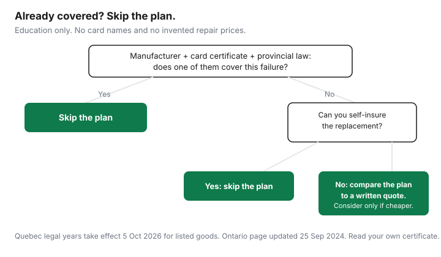

Household Items and Supplies · Canada
Are Extended Warranties Worth It in Canada? Check Manufacturer, Card, and Provincial Legal Warranties First
The plan at the till is a contract with a price. The coverage you may already have is a manufacturer warranty, a sentence in a credit-card certificate, and, in some provinces, a legal warranty you do not buy. This guide is the order to read those layers. It does not rank plans, name cards, or invent a repair bill. It is not legal advice and it is not a recommendation to buy or refuse a plan.
Key takeaways
- Read the manufacturer warranty that comes with the product before you price an extra plan. The years are whatever that warranty prints.
- Many cards extend a manufacturer warranty. Many do not. The certificate for the card that pays is the only source. This page does not name or rank cards.
- In Québec, a legal warranty of good working order takes effect 5 October 2026 for listed new appliances and electronics. Merchants must use an updated OPC notice before selling an extra plan on those goods.
- Ontario’s returns and warranties page, updated 25 Sep 2024, says the law does not give a general right to return goods, and an extended warranty usually costs extra.
- If you still might buy a plan, write the plan price next to a repair quote you obtained. Blank cells are not a reason to sign.
The coverage you already have: manufacturer + card benefit + provincial law
The manufacturer warranty is the paper or the web page that came with the product. It names a duration, what fails are included, and whether you pay freight. Do not substitute a “one year is standard” guess. If the box did not include the terms, get them from the manufacturer for that model before you listen to a plan. A store return policy is not this warranty. Ontario’s page, updated 25 September 2024, says the Consumer Protection Act does not give a general right to return or exchange goods. Ask the store’s return rules, and get them in writing if a return is part of why you are buying. The page also says you can ask for a refund if a business misrepresents the product.
A credit-card extended warranty, where it exists, is a benefit in the card’s certificate, not a feature of “credit cards” as a class. Many certificates add a period after the manufacturer’s warranty ends, with a cap and a list of exclusions. Many cards, debit cards, and store financing do none of that. Open the certificate for the card you will use to pay. Read the extra months, the maximum, and whether you must charge the full price to that card. This guide does not name a card and does not say one card’s benefit is better than another. How to read a certificate without a ranking is the same habit as the travel-medical certificate guide. Points versus cash back, which is a different decision, is the rewards comparison. Neither page is a warranty.
Provincial law is the third layer, and it is not the same text in every province. Québec’s fixed warranty for listed appliances and electronics is the good-working-order guide. Ontario’s public page is the one cited above: a warranty is a promise to repair or replace a defective item for a period after purchase, and you should ask how long, what damage is covered, who offers it, whether you get a repair or a replacement, and whether you pay shipping and parts. Other provinces publish their own pages. Use the page for the province where you buy, not a national summary this draft did not verify.
What protection plans cost vs typical repair costs
A plan price you did not see on a quote sheet is not a number this guide will print. A “typical” repair bill that did not come from a dated repair invoice is the same kind of invention. The comparison is a worksheet you fill at the desk, or you do not buy. Write the plan’s price, the years it adds after the manufacturer warranty, the deductible if there is one, and whether labour, parts, and freight are included. Then write a repair quote for the failure you actually fear, from a shop that will put the quote in writing, or the price of replacing the item. If you cannot fill both columns, you cannot tell whether the plan is expensive.
| Layer | What it covers | What you pay | Claim path |
|---|---|---|---|
| Manufacturer warranty | Whatever the model’s own terms say | Usually included in the product price. Freight may not be | The manufacturer or the service shop they name |
| Card benefit | Many cards extend the manufacturer warranty. Yours may not. Read the certificate | The card’s annual fee is a separate decision. The benefit itself should not be a second plan price | The issuer’s benefit administrator, with the certificate’s documents |
| Provincial law | Québec: fixed years on listed goods from 5 Oct 2026. Ontario: no general return right; a warranty is a repair-or-replace promise. Your province’s page if you are elsewhere | The legal warranty is not a product you add at the till | Merchant or manufacturer in Québec; the business, then the province’s complaint path |
| Store protection plan | The contract’s list, which can be narrower than the pitch | Write the quoted price: | The administrator named in the contract |
| Repair quote you obtained | The failure you asked the shop to price | Write the quote: | That shop, if you hire them outside a warranty |
Ontario’s page says an extended warranty usually costs extra and offers the same kind of promise for longer, and that it might be cheaper to replace a low-cost item than to buy the plan, especially if the plan excludes shipping or parts. That is a prompt to fill the worksheet, not a finding that plans are always a poor buy. A company that closes can leave a plan you cannot enforce. The page says to research who is offering the warranty. Canada’s Competition Bureau, the same page notes, enforces rules against misleading warranty claims. The Bureau does not get your refund for you.
Quebec buyers: legal warranties and the mandatory notice before a plan is sold
Québec buyers have a dated change. The warranty of good working order takes effect on 5 October 2026 for listed new appliances and electronics bought or leased from a merchant on or after that day. The years, the exclusions, and the claim path are on the Québec warranty guide. Short version, from the OPC pages checked for that guide: the clock starts at delivery, the repair includes parts, labour, and reasonable transport, and you can claim from the merchant or the manufacturer. Other Québec legal warranties, including reasonable durability, continue during and after those years.
The OPC merchant page, last modified 24 September 2026, says that from 5 October 2026 a merchant who offers an additional warranty on a covered appliance or electronic must use the updated written notice about legal warranties. Merchants already had to give a written notice before offering an extra warranty. The notice changes because this new warranty is a legal warranty. If the paper you are handed does not describe the legal warranty, or if the pitch says you are unprotected after one year on a fridge bought after 5 October 2026, stop and open the OPC table. Other ways Québec’s money rules differ from other provinces are on the Québec personal-finance guide. This section is education, not a legal opinion on your contract.
When a plan can make sense (high-failure items, no card coverage)
A plan is a possible buy when three things are true at once, and you can show them on paper. The manufacturer warranty, the card certificate, and the provincial rule you actually have do not cover the failure. You looked: the certificate is silent or excluded, and the legal years will have ended. Second, you cannot replace the item from cash you already set aside without damaging the rest of the month. Third, the plan’s price is lower than a written repair quote for that failure, or lower than replacement, after you include the plan’s deductible and any freight the plan will not pay.
This draft did not open a failure-rate study, so it will not call any product a high-failure item by percentage. “High failure” here means you have a reason you can name: a repair quote that is large next to the product’s price, or a model whose manufacturer warranty is short and whose certificate adds nothing. A cashier’s list of scary failures is not that reason. If any of the three tests fails, the default in this method is to skip the plan and keep the receipt.
How to make a claim: receipts, serial numbers, and timelines
File four facts the day the product arrives: receipt, model, serial number, and delivery date. The delivery date is the start of Québec’s legal clock for covered goods. The receipt shows who sold it and what you paid. The serial number is how a later buyer, or an insurer, knows which unit failed. Photos of the same facts belong in the home-inventory file if the path is a home-insurance claim rather than a warranty. Those are different claims. Do not send a warranty administrator a demand that belongs to an insurer, or the reverse.
When it fails, contact the party that layer names, before you hire a shop. In Québec the OPC says you may not repair first and forward the bill; you ask the merchant or the manufacturer to repair or to authorize someone else. A card benefit usually wants the manufacturer’s refusal or the warranty’s end date, plus the certificate’s form. A store plan wants the administrator in the contract, inside that contract’s days. Write down the date you called and keep the reply. Ontario’s page says a written contract is required if the purchase from a business is more than $50 including a deposit. Keep that contract with the serial number. A deposit on a special-order appliance is part of the same file, not a scrap of paper in a truck.
Decision flowchart and cost-vs-risk table

The cost-versus-risk table is the worksheet above, not a second set of national prices. Fill the plan price and the repair quote in the store, or walk. If the plan is still the lower number after you subtract what the manufacturer, the certificate, and provincial law already do, you have a reason. If it is not, you have a reason to decline. Either outcome is a finished decision. An unfinished worksheet is how the plan gets added to the receipt by default.
Sources & date stamps
- OPC consumer page, last update 16 Sep 2026, and merchant Q&A, last modification 24 Sep 2026, read 26 Sep 2026: warranty of good working order from 5 Oct 2026; updated written notice before an additional warranty on a covered good. Durations are on the Québec warranty guide.
- Ontario.ca, “Returns, exchanges and warranties,” updated 25 Sep 2024, published 14 Mar 2014, read 26 Sep 2026: no general legal right to return goods; warranty as a repair-or-replace promise; extended warranties usually cost extra; check whether a credit card offers protection; written contract if the purchase is more than $50 including a deposit; Competition Bureau and misleading warranty claims.
- No protection-plan price and no repair invoice were used. Those cells stay blank. No card is named.
Frequently asked questions
Are store protection plans worth it in Canada?
Only after you price what you already have. The manufacturer warranty, a card benefit if your certificate includes one, and a provincial legal warranty can cover the same years a plan is selling. Ontario's page, updated 25 Sep 2024, says an extended warranty usually costs extra for a longer version of the repair-or-replace promise. This guide does not rank plans.
Does my credit card extend the manufacturer's warranty?
Some cards do, and many do not. The only source that counts is the certificate for the card you used to pay, including the extra months, the dollar cap, and what is excluded. This page does not name cards or rank them. If the certificate is silent, assume you do not have the benefit.
What changes for Québec buyers on 5 October 2026?
A legal warranty of good working order takes effect for listed new appliances and electronics bought or leased on or after that date, with fixed years the OPC publishes. From the same date, a merchant who offers an extra warranty on a covered good must use the OPC's updated written notice about legal warranties. The details are on the Québec warranty guide. This is not legal advice.
What if the product breaks just after the manufacturer warranty ends?
Read the next layer before you pay a plan at the till for a fear of that month. In Québec, on a covered good bought on or after 5 Oct 2026, the legal warranty can still be running. Elsewhere, the card certificate may add time, or it may not. A store plan is a contract you price against a repair quote, not a default.
What paperwork do I need to make a warranty claim?
Keep the receipt, the serial number, the model, the delivery date, and the name of who must repair it: manufacturer, card issuer, or plan administrator. In Québec the OPC says you show the malfunction during the covered period and you contact the merchant or manufacturer first. A home-inventory file is for an insurance claim, which is a different path.